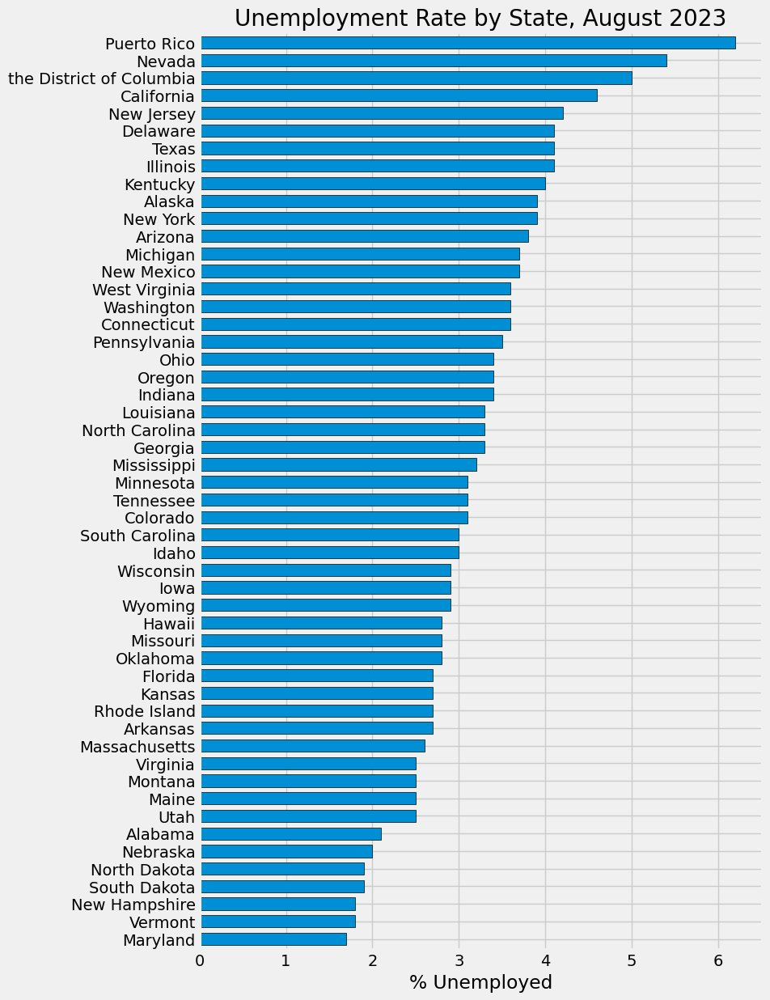
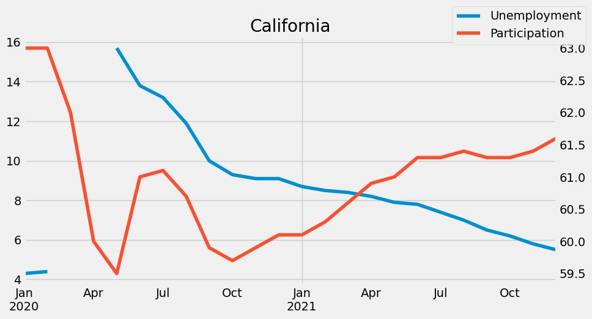
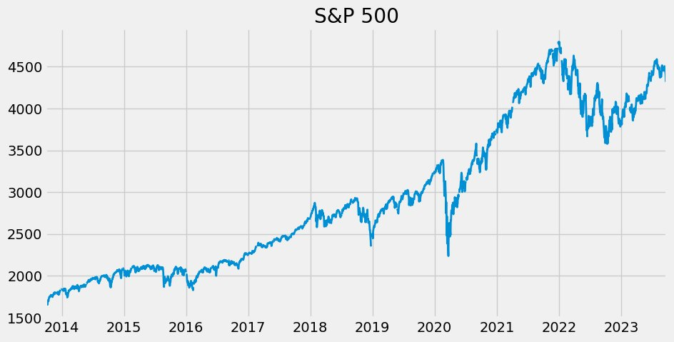

US economic data analysis with the FRED API
The question
How did unemployment and labor force participation compare across US states, and how did they move together around 2020 to 2021?
- FRED API
- State unemployment series (loop)
- State participation series
- One combined dataframe
- State comparisons and charts
What I did
- Connected to the FRED API with the
fredapilibrary and searched its catalog for economic series. - Pulled the S&P 500 as a first time series and plotted it.
- Collected unemployment rates for every state: searched for the monthly, seasonally adjusted state series, looped over the series IDs, and combined them into one dataframe with the state names as columns.
- Pulled labor force participation rates for the states the same way.
- Compared unemployment and participation with a grid of charts for every state for 2020 to 2021, and a closer look at California.
Results
- August 2023 unemployment by state: Puerto Rico (about 6.2%), Nevada (about 5.4%), and the District of Columbia (about 5.0%) had the highest rates. Maryland, Vermont, and New Hampshire had the lowest, under 2%.
- California, 2020 to 2021: unemployment rose sharply in spring 2020 and then fell steadily, while labor force participation dipped and then recovered.



Tools
- Python
- fredapi
- pandas
- Matplotlib
- Plotly Express
Skills shown
- API data collection
- Looping and merging many data series
- Filtering and cleaning with pandas
- Time series plotting
- Labor market analysis
Code preview
Pulling every state's unemployment series from FRED
unemp_df = fred.search('unemployment rate state', filter=('frequency', 'Monthly'))
unemp_df = unemp_df.query('seasonal_adjustment == "Seasonally Adjusted" and units == "Percent"')
all_results = []
for myid in unemp_df.index:
results = fred.get_series(myid)
results = results.to_frame(name=myid)
all_results.append(results)
time.sleep(0.1)
unemp_results = pd.concat(all_results, axis=1)Excerpts from the original file, reformatted for readability. View the full notebook on GitHub.